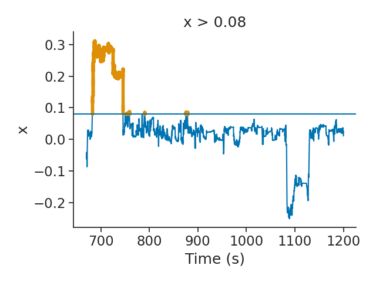
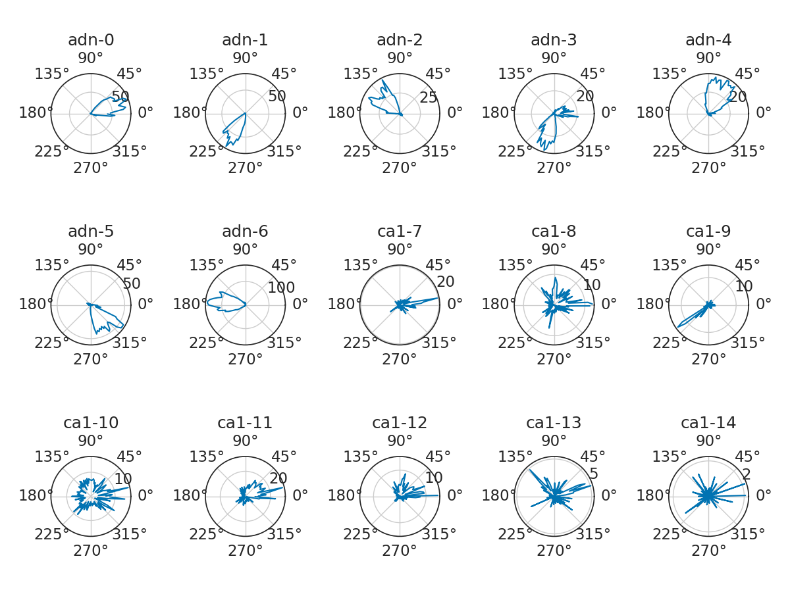
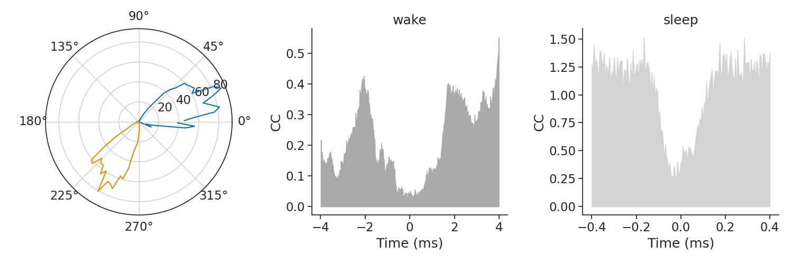
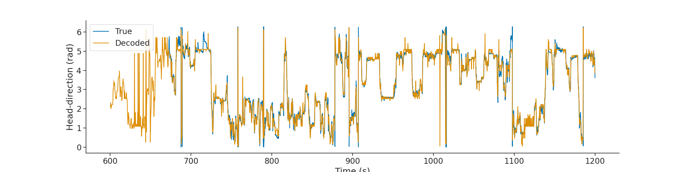
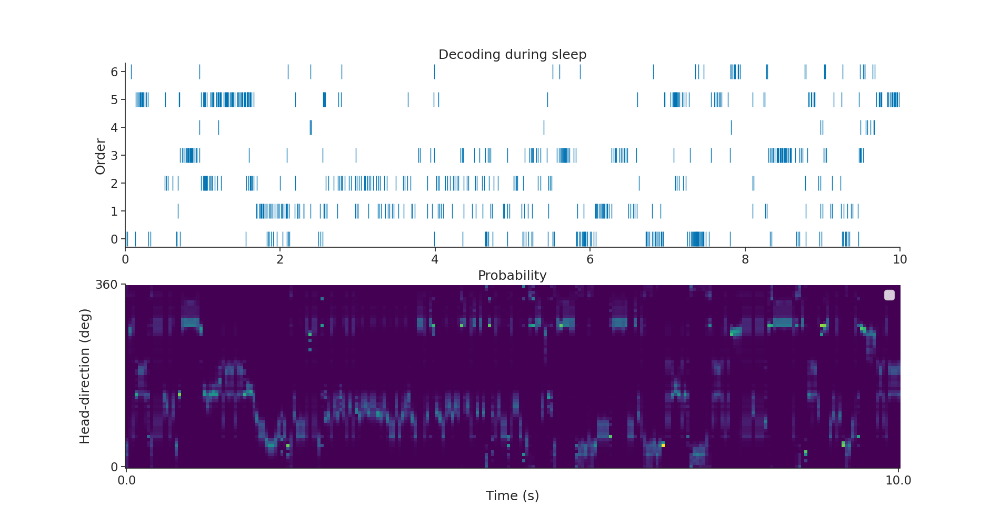

Note
Click here to download the full example code
Quick start
The examplar data to replicate the figure in the jupyter notebook can be found here.
The data contains a sample recordings taken simultaneously from the anterodorsal thalamus and the hippocampus and contains both a sleep and wake session. It contains both head-direction cells (i.e. cells that fire for a particular head direction in the horizontal plane) and place cells (i.e. cells that fire for a particular position in the environment).
Preprocessing of the data was made with Kilosort 2.0 and spike sorting was made with Klusters.
Instructions for installing pynapple can be found here.
This notebook is meant to provide an overview of pynapple by going through:
- Input output (IO). In this case, pynapple will load a NWB file using the NWBFile object within a project Folder that represent a dataset.
- Core functions that handle time series, interval sets and groups of time series. See this notebook for a detailled usage of the core functions.
- Process functions. A small collection of high-level functions widely used in system neuroscience. This notebook details those functions.
Warning
This tutorial uses seaborn and matplotlib for displaying the figure.
You can install both with pip install matplotlib seaborn
import numpy as np
import pandas as pd
import pynapple as nap
import matplotlib.pyplot as plt
import seaborn as sns
custom_params = {"axes.spines.right": False, "axes.spines.top": False}
sns.set_theme(style="ticks", palette="colorblind", font_scale=1.5, rc=custom_params)
IO
The first step is to give the path to the data folder.
We can load the session with the function load_folder. Pynapple will walks throught the folder and collects every subfolders.
We can use the attribute view or the function expand to display a tree view of the dataset. The treeview shows all the compatible data format (i.e npz files or NWBs files) and their equivalent pynapple type.
Out:
📂 MyProject
└── 📂 sub-A2929
└── 📂 ses-A2929-200711
├── 📂 derivatives
│ ├── spikes.npz | TsGroup
│ ├── sleep_ep.npz | IntervalSet
│ ├── position.npz | TsdFrame
│ └── wake_ep.npz | IntervalSet
├── 📂 pynapplenwb
│ └── A2929-200711 | NWB file
├── x_plus_y.npz | Tsd
└── stimulus-fish.npz | IntervalSet
The object data is a Folder object that allows easy navigation and interaction with a dataset.
In this case, we want to load the NWB file in the folder /pynapplenwb. Data are always lazy loaded. No time series is loaded until it's actually called.
When calling the NWB file, the object nwb is an interface to the NWB file. All the data inside the NWB file that are compatible with one of the pynapple objects are shown with their corresponding keys.
Out:
A2929-200711
┏━━━━━━━━━━━━━━━━━━━━━━━┳━━━━━━━━━━━━━┓
┃ Keys ┃ Type ┃
┡━━━━━━━━━━━━━━━━━━━━━━━╇━━━━━━━━━━━━━┩
│ units │ TsGroup │
│ position_time_support │ IntervalSet │
│ epochs │ IntervalSet │
│ z │ Tsd │
│ y │ Tsd │
│ x │ Tsd │
│ rz │ Tsd │
│ ry │ Tsd │
│ rx │ Tsd │
└───────────────────────┴─────────────┘
We can individually call each object and they are actually loaded.
units is a TsGroup object. It allows to group together time series with different timestamps and couple metainformation to each neuron. In this case, the location of where the neuron was recorded has been added when loading the session for the first time.
We load units as spikes
Out:
Index rate location group
------- ------ ---------- -------
0 7.3 adn 0
1 5.73 adn 0
2 8.12 adn 0
3 6.68 adn 0
4 10.77 adn 0
5 11 adn 0
6 16.52 adn 0
7 2.2 ca1 1
8 2.02 ca1 1
9 1.07 ca1 1
10 3.92 ca1 1
11 3.31 ca1 1
12 1.09 ca1 1
13 1.28 ca1 1
14 1.32 ca1 1
In this case, the TsGroup holds 15 neurons and it is possible to access, similar to a dictionnary, the spike times of a single neuron:
Out:
Time (s)
0.00845 NaN
0.03265 NaN
0.13230 NaN
0.30340 NaN
0.32900 NaN
..
1186.12755 NaN
1189.38400 NaN
1194.13475 NaN
1196.20750 NaN
1196.67675 NaN
Length: 8764, dtype: float64
neuron_0 is a Ts object containing the times of the spikes.
The other information about the session is contained in nwb["epochs"]. In this case, the start and end of the sleep and wake epochs. If the NWB time intervals contains tags of the epochs, pynapple will try to group them together and return a dictionnary of IntervalSet instead of IntervalSet.
Out:
Finally this dataset contains tracking of the animal in the environment. rx, ry, rz represent respectively the roll, the yaw and the pitch of the head of the animal. x and z represent the position of the animal in the horizontal plane while y represents the elevation.
Here we load only the head-direction as a Tsd object.
Out:
Time (s)
670.64070 5.207148
670.64900 5.181029
670.65735 5.155508
670.66565 5.136537
670.67400 5.120850
...
1199.96160 3.665954
1199.96995 3.634619
1199.97825 3.617849
1199.98660 3.609446
1199.99495 3.609375
Length: 63527, dtype: float64
Core
The core functions of pynapple provides many ways to manipulate time series. In this example, spike times are restricted to the wake epoch. Notice how the frequencies change from the original object.
Out:
Index rate location group
------- ------ ---------- -------
0 4.85 adn 0
1 8.06 adn 0
2 7.11 adn 0
3 7.66 adn 0
4 7.97 adn 0
5 11.29 adn 0
6 22.08 adn 0
7 1.82 ca1 1
8 2.84 ca1 1
9 0.7 ca1 1
10 4.78 ca1 1
11 4.93 ca1 1
12 1.71 ca1 1
13 0.97 ca1 1
14 0.26 ca1 1
The same operation can be applied to all time series.
# In this example, we want all the epochs for which position in `x` is above a certain threhsold. For this we use the function `threshold`.
posx = nwb["x"]
threshold = 0.08
posxpositive = posx.threshold(threshold)
plt.figure()
plt.plot(posx)
plt.plot(posxpositive, ".")
plt.axhline(threshold)
plt.xlabel("Time (s)")
plt.ylabel("x")
plt.title("x > {}".format(threshold))
plt.tight_layout()
plt.show()

The epochs above the threshold can be accessed through the time support of the Tsd object. The time support is an important concept in the pynapple package. It helps the user to define the epochs for which the time serie should be defined. By default, Ts, Tsd and TsGroup objects possess a time support (defined as an IntervalSet). It is recommended to pass the time support when instantiating one of those objects.
Out:
start end
0 682.660850 745.565725
1 752.240350 752.440325
2 752.582000 752.673650
3 757.498375 758.998300
4 789.863275 790.271575
5 875.225250 876.066875
6 878.158425 878.641725
Tuning curves
Let's do a more advanced analysis. Neurons from ADn (group 0 in the spikes group object) are know to fire for a particular direction. Therefore, we can compute their tuning curves, i.e. their firing rates as a function of the head-direction of the animal in the horizontal plane (ry). To do this, we can use the function compute_1d_tuning_curves. In this case, the tuning curves are computed over 120 bins and between 0 and 2$\pi$.
tuning_curves = nap.compute_1d_tuning_curves(
group=spikes, feature=head_direction, nb_bins=121, minmax=(0, 2 * np.pi)
)
print(tuning_curves)
Out:
0 1 2 3 4 ... 10 11 12 13 14
0.025964 45.520459 0.0 0.000000 6.207335 6.207335 ... 6.207335 10.345559 14.483782 0.000000 2.069112
0.077891 55.049762 0.0 0.000000 5.504976 3.302986 ... 8.807962 16.514929 1.100995 0.000000 0.000000
0.129818 76.369034 0.0 0.000000 17.144069 4.675655 ... 3.117103 12.468414 9.351310 1.558552 0.000000
0.181745 82.179721 0.0 0.000000 6.522200 1.304440 ... 6.522200 19.566600 9.131080 2.608880 0.000000
0.233672 73.851374 0.0 0.000000 13.187745 5.275098 ... 15.825294 30.331814 7.912647 2.637549 0.000000
... ... ... ... ... ... ... ... ... ... ... ...
6.049513 15.001060 0.0 0.000000 12.273595 1.363733 ... 8.182397 2.727466 0.000000 0.000000 1.363733
6.101440 22.327159 0.0 0.000000 13.954475 0.000000 ... 2.790895 11.163580 2.790895 0.000000 0.000000
6.153367 47.062150 0.0 0.000000 21.177967 0.000000 ... 7.059322 11.765537 0.000000 2.353107 0.000000
6.205295 56.003958 0.0 2.000141 8.000565 2.000141 ... 14.000990 24.001696 6.000424 0.000000 0.000000
6.257222 38.712414 0.0 0.000000 7.742483 0.000000 ... 7.742483 7.742483 7.742483 0.000000 0.000000
[121 rows x 15 columns]
We can plot tuning curves in polar plots.
neuron_location = spikes.get_info("location") # to know where the neuron was recorded
plt.figure(figsize=(12, 9))
for i, n in enumerate(tuning_curves.columns):
plt.subplot(3, 5, i + 1, projection="polar")
plt.plot(tuning_curves[n])
plt.title(neuron_location[n] + "-" + str(n), fontsize=18)
plt.tight_layout()
plt.show()

While ADN neurons show obvious modulation for head-direction, it is not obvious for all CA1 cells. Therefore we want to restrict the remaining of the analyses to only ADN neurons. We can split the spikes group with the function getby_category.
spikes_by_location = spikes.getby_category("location")
print(spikes_by_location["adn"])
print(spikes_by_location["ca1"])
spikes_adn = spikes_by_location["adn"]
Out:
Index rate location group
------- ------ ---------- -------
0 7.3 adn 0
1 5.73 adn 0
2 8.12 adn 0
3 6.68 adn 0
4 10.77 adn 0
5 11 adn 0
6 16.52 adn 0
Index rate location group
------- ------ ---------- -------
7 2.2 ca1 1
8 2.02 ca1 1
9 1.07 ca1 1
10 3.92 ca1 1
11 3.31 ca1 1
12 1.09 ca1 1
13 1.28 ca1 1
14 1.32 ca1 1
Correlograms
A classical question with head-direction cells is how pairs stay coordinated across brain states i.e. wake vs sleep (see Peyrache, A., Lacroix, M. M., Petersen, P. C., & Buzsáki, G. (2015). Internally organized mechanisms of the head direction sense. Nature neuroscience, 18(4), 569-575.)
In this example, this coordination across brain states will be evaluated with cross-correlograms of pairs of neurons. We can call the function compute_crosscorrelogram during both sleep and wake epochs.
cc_wake = nap.compute_crosscorrelogram(
group=spikes_adn,
binsize=20, # ms
windowsize=4000, # ms
ep=epochs["wake"],
norm=True,
time_units="ms",
)
cc_sleep = nap.compute_crosscorrelogram(
group=spikes_adn,
binsize=5, # ms
windowsize=400, # ms
ep=epochs["sleep"],
norm=True,
time_units="ms",
)
From the previous figure, we can see that neurons 0 and 1 fires for opposite directions during wake. Therefore we expect their cross-correlograms to show a trough around 0 time lag, meaning those two neurons do not fire spikes together. A similar trough during sleep for the same pair thus indicates a persistence of their coordination even if the animal is not moving its head. mkdocs_gallery_thumbnail_number = 3
xtwake = cc_wake.index.values
xtsleep = cc_sleep.index.values
plt.figure(figsize=(15, 5))
plt.subplot(131, projection="polar")
plt.plot(tuning_curves[[0, 1]]) # The tuning curves of the pair [0,1]
plt.subplot(132)
plt.fill_between(
xtwake, np.zeros_like(xtwake), cc_wake[(0, 1)].values, color="darkgray"
)
plt.title("wake")
plt.xlabel("Time (ms)")
plt.ylabel("CC")
plt.subplot(133)
plt.fill_between(
xtsleep, np.zeros_like(xtsleep), cc_sleep[(0, 1)].values, color="lightgrey"
)
plt.title("sleep")
plt.xlabel("Time (ms)")
plt.ylabel("CC")
plt.tight_layout()
plt.show()

Decoding
This last analysis shows how to use the pynapple's decoding function.
The previous result indicates a persistent coordination of head-direction cells during sleep. Therefore it is possible to decode a virtual head-direction signal even if the animal is not moving its head.
This example uses the function decode_1d which implements bayesian decoding (see : Zhang, K., Ginzburg, I., McNaughton, B. L., & Sejnowski, T. J. (1998). Interpreting neuronal population activity by reconstruction: unified framework with application to hippocampal place cells. Journal of neurophysiology, 79(2), 1017-1044.)
First we can validate the decoding function with the real position of the head of the animal during wake.
tuning_curves_adn = nap.compute_1d_tuning_curves(
spikes_adn, head_direction, nb_bins=61, minmax=(0, 2 * np.pi)
)
decoded, proba_angle = nap.decode_1d(
tuning_curves=tuning_curves_adn,
group=spikes_adn,
ep=epochs["wake"],
bin_size=0.3, # second
feature=head_direction,
)
print(decoded)
Out:
Time (s)
600.15 2.111562
600.45 2.111562
600.75 2.317568
601.05 2.008559
601.35 2.111562
...
1198.65 4.583635
1198.95 4.274626
1199.25 4.583635
1199.55 4.583635
1199.85 3.862614
Length: 2000, dtype: float64
We can plot the decoded head-direction along with the true head-direction.
plt.figure(figsize=(20, 5))
plt.plot(head_direction.as_units("s"), label="True")
plt.plot(decoded.as_units("s"), label="Decoded")
plt.legend()
plt.xlabel("Time (s)")
plt.ylabel("Head-direction (rad)")
plt.show()

Raster
Finally we can decode activity during sleep and overlay spiking activity of ADN neurons as a raster plot (in this case only during the first 4 seconds). Pynapple return as well the probability of being in a particular state. We can display it next to the spike train.
First let's decode during sleep with a bin size of 40 ms.
decoded_sleep, proba_angle_Sleep = nap.decode_1d(
tuning_curves=tuning_curves_adn,
group=spikes_adn,
ep=epochs["sleep"],
bin_size=0.04, # second
feature=head_direction,
)
Here we are gonna chain the TsGroup function set_info and the function to_tsd to flatten the TsGroup and quickly assign to each spikes a corresponding value found in the metadata table. Any columns of the metadata table can be assigned to timestamps in a TsGroup.
Here the value assign to the spikes comes from the preferred firing direction of the neurons. The following line is a quick way to sort the neurons based on their preferred firing direction
Out:
Assigning order as a metadata of TsGroup
Out:
Index rate location group order
------- ------ ---------- ------- -------
0 7.3 adn 0 0
1 5.73 adn 0 4
2 8.12 adn 0 2
3 6.68 adn 0 6
4 10.77 adn 0 1
5 11 adn 0 3
6 16.52 adn 0 5
"Flattening" the TsGroup to a Tsd based on order.
It's then very easy to call plot on tsd_adn to display the raster
Out:
Time (s)
0.00845 0.0
0.03265 0.0
0.07745 6.0
0.13230 0.0
0.14045 5.0
...
1199.90650 5.0
1199.91745 5.0
1199.94065 5.0
1199.95035 5.0
1199.96795 5.0
Length: 79349, dtype: float64
Plotting everything
subep = nap.IntervalSet(start=0, end=10, time_units="s")
plt.figure(figsize=(19, 10))
plt.subplot(211)
plt.plot(tsd_adn.restrict(subep), "|", markersize=20)
plt.xlim(subep.start[0], subep.end[0])
plt.ylabel("Order")
plt.title("Decoding during sleep")
plt.subplot(212)
p = proba_angle_Sleep.restrict(subep)
plt.imshow(p.values.T, aspect="auto", origin="lower", cmap="viridis")
plt.title("Probability")
plt.xticks([0, p.shape[0] - 1], subep.values[0])
plt.yticks([0, p.shape[1]], ["0", "360"])
plt.legend()
plt.xlabel("Time (s)")
plt.ylabel("Head-direction (deg)")
plt.legend()
plt.show()

Out:
No artists with labels found to put in legend. Note that artists whose label start with an underscore are ignored when legend() is called with no argument.
No artists with labels found to put in legend. Note that artists whose label start with an underscore are ignored when legend() is called with no argument.
Total running time of the script: ( 0 minutes 5.922 seconds)
Download Python source code: tutorial_pynapple_quick_start.py
Download Jupyter notebook: tutorial_pynapple_quick_start.ipynb